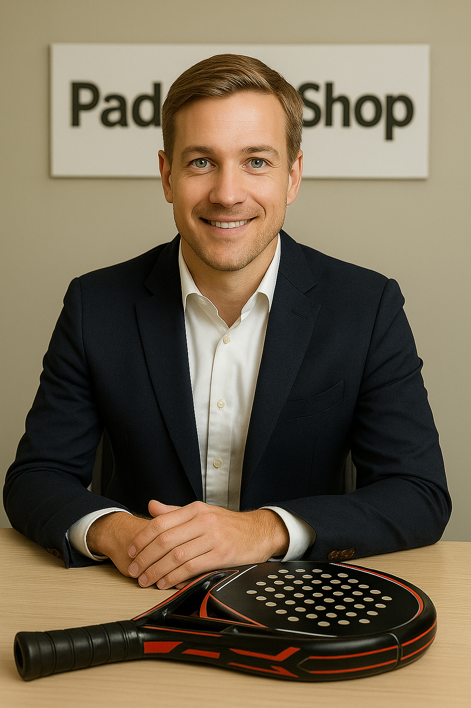
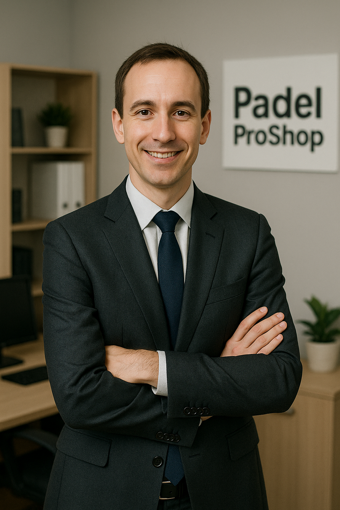
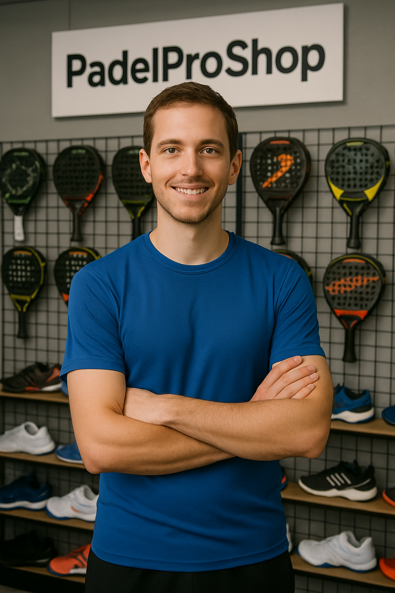

Pasión por el pádel desde 2010
"El Inicio de PadelPROShop: Pasión por el Padel, desde el primer golpe" Todo comenzó con Franco, un apasionado jugador de pádel que soñaba con crear un espacio donde todos los amantes de este deporte pudieran encontrar lo mejor en equipamiento y asesoramiento. Con ese sueño en mente, abrió PadelPROShop, una tienda que nacía de la experiencia real en la cancha y el amor por el pádel. Desde sus primeros días, la tienda se destacó por ofrecer atención personalizada y productos de calidad, ganándose la confianza de jugadores locales. A medida que creció, PadelPROshop se consolidó como un referente para quienes buscan mejorar su rendimiento y disfrutar del deporte al máximo. Hoy, seguimos manteniendo la misma pasión y dedicación con la que comenzamos, porque para nosotros, el pádel no es solo un deporte, es una forma de vida.
Durante estos años hemos crecido junto a la comunidad del pádel, siempre manteniendo nuestro compromiso con la calidad, el servicio personalizado y los precios justos. Hoy somos el punto de referencia para jugadores de todos los niveles.
Seleccionamos cuidadosamente cada producto para asegurar que nuestros clientes reciban solo lo mejor. Trabajamos únicamente con marcas reconocidas mundialmente.
Cada cliente es único y merece un trato especial. Nuestro equipo de expertos te asesorará para encontrar el equipamiento perfecto para tu nivel y estilo de juego.
No somos solo una tienda, somos jugadores apasionados. Entendemos las necesidades de la comunidad porque somos parte de ella.

Fundador y CEO
Ex jugador profesional de padel durante 10 años. Especialista en equipamiento técnico y asesoramiento deportivo. Gracias a su experiencia en torneos como World Padel Tour y AJPP (Asociacion de jugadores de padel profesional de la Argentina).

Co-fundador y Director de Ventas
Experto en atención al cliente y logística. Su dedicación asegura que cada pedido llegue perfecto y a tiempo a nuestros clientes.

Especialista Técnico
Matías Rodriguez es un especialista técnico en pádel con 8 años de experiencia como jugador activo y 4 años en el sector comercial. Su profundo conocimiento del juego, combinado con su participación en más de 50 torneos, le permite analizar las necesidades específicas de cada jugador y recomendar el equipamiento más adecuado. Experto en características técnicas de palas, materiales, balances y tecnologías, Matías brinda asesoramiento personalizado tanto para principiantes que buscan su primera pala como para jugadores avanzados que necesitan equipamiento de alta performance.
Más de 5,000 jugadores han confiado en nosotros para equiparse con lo mejor del pádel.
Llegamos a todas las provincias de Argentina con nuestro servicio de envío rápido y seguro.
El 99% de nuestros clientes nos recomiendan y vuelven a confiar en nosotros para sus compras.
En PadelPro nos comprometemos a seguir creciendo junto a la comunidad del pádel argentino. Trabajamos día a día para ofrecer los mejores productos, el mejor servicio y los mejores precios.
Nuestro objetivo es que cada jugador, desde el principiante hasta el profesional, encuentre en PadelPro todo lo que necesita para disfrutar al máximo de este deporte increíble.
Conoce Nuestros Productos